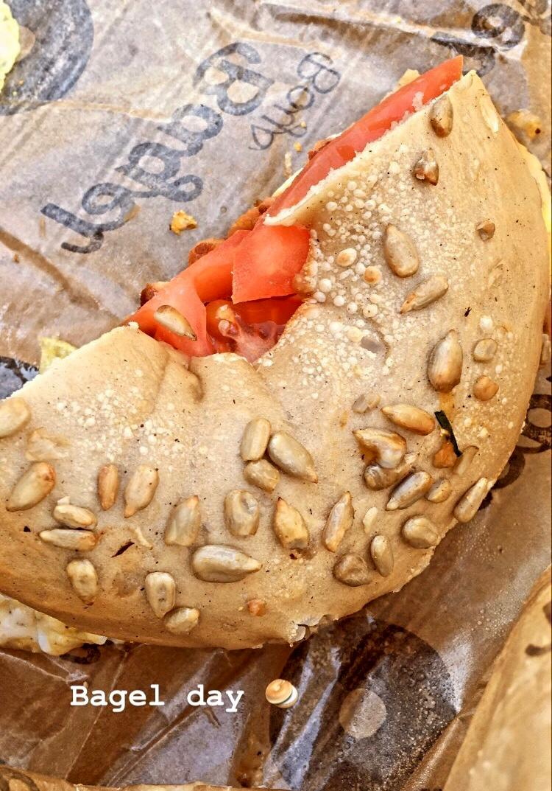
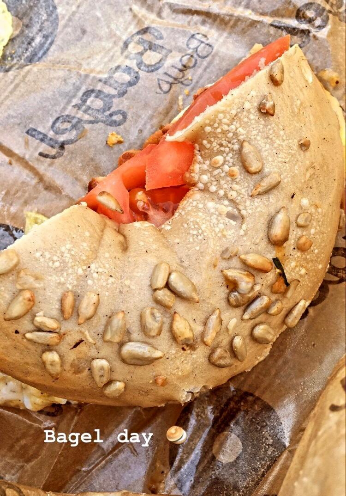

 About me
I am a first year PhD student at Texas A and M University in the Department of Mathematics.
My research interest lies in symplectic topology and geometric analysis, and my current advisor is Dr. Guangbo Xu.
Office: Blocker 530
Email: jlopez1234@tamu.edu
Education
2019-2020: M.A. in Mathematics from University of Cambridge Wrote a thesis on Atiyah-Singer index Theorem under the supervision of Dr. Alexei Kovalev
2018-2019: Postbac certificate in Mathematics from Iowa State University
2014-2018: BS degree in Mathematics from University of Texas Rio Grande Valley
2017: Studied abroad at ETH Zurich ETH Zurich
Conferences
2021: South Central Texas Topology Conference
2021: Advances in Symplectic Topology
2020-: Symplectic Zoominar
2020: AGITTOC
2019: PCMI
2018: SAMMS at OSU
2018: Field of Dreams
2018: SAMMS at OSU
Talks
2021: Graduate Student Seminar at TAMU
2021: Fitchburg State University talk promoting math
2020: Kuranishi structures, AGITTOC
2020: Stable curves, AGITTOC
Articles
2021: Index of SO(3) instanton equation (pending)
2021: SO(3) instanton equation (pending)
2020: Preprint of notes in Differential Geometry
2020: Preprint of notes in Lefschetz fibrations
2020: Atiyah-Singer Index Theorem (Master thesis)
Class notes + exercises. Fyi, some documents are handwritten .-.
2022: Real Analysis I + hmk from Folland (in progress)
2022: Topology I + hmk from Munkres (in progress)
2021: Topology by Milnor (in progress)
2021: PDEs (in progress)
2020: Part III Differential Geometry
2020: Part III Symplectic Geometry
2020: Part III Algebraic Topology
2020: Part III Algebraic Geometry
2020: Part III Complex Geometry
2020: Selected exercises in ODEs by Perko + other sources (pending)
2020: Selected exercises in PMA by Rudin (pending)
2020: Selected exercises in Linear algebra by Prof. Hogben (pending)
2020: Selected exercises in Intro Algebra by Hungerford + other sources (pending)
Qual prep
2022: Selected exercises from Folland (in progress)
2021: Selected exercises from Munkres (in progress)
2020: Selected exercises from Hatcher
2020: Selected exercises from Tu
2021: Past Top/DG Quals (in progress)
2021: Past Real analysis Quals (in progress)
More notes that help me. Fyi, most documents are handwritten .-.
2021: Kobayashi and Nomizu Ch. 1,2
2021: Fukaya categories by Prof. Auroux
2021: Algebra I by Prof. Soren Galatius (in progress)
2021: 4-manifolds by Prof. Perutz
2021: Algebra II by Prof. Gregory Brumfiel (in progress)
2021: Commutative algebra by Gathmann (in progress)
2021: The Atiyah-Singer Index theorem + topology by Prof. Roe (in progress)
2021: Lagrangian topology by Prof. Cornea (in progress)
2020: Part III PDEs
2020: Monodromy invariants by Prof. Auroux
2021: Complex geometry GSS Nairobi 201 by Prof. Joyce (in progress)
2021: Functional Analysis by Prof. Carlotto
2021: Vakil FOAG
2021: Complex Analysis by Prof. McMullen (in progress)
2021: Gauge theory by Prof. Haydys (PCMI)
2021: Geometric analysis by Prof. Donaldson
2021: GW/DT invariants by Prof. Sheshmani
Hobbies
Love to go out and eat with family
Hang out with friends
Play soccer
Play guitar
Go on long walks
Hike trials
Meet new people
HP, LOTR, Marvel, The Office, boardgames, etc.. Yes, I am a big nerd
Motivation
Math is hard. But you are not alone.